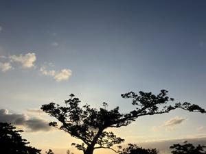

うるがいの話 ある日
最新: アコースティックギター【うるがいの話 ある日】とは 一日だけのプログです
『うるがいの話』の最新一日だけのプログで、通信料が少なく経済的だ。カニの画像をクリックすると全ての日付が載る『うるがいの話』サイトを表示します
|
|
【うるがいの話】 うるがい(ｳﾙｶﾞｲ urugai)とは、『もずくがに』の名前でとても大きくなります。 |
|---|---|
|
|
【カミマヤーの話】 猫のことを方言でマヤーといいます。カミマヤー（kamimayaa）とは、神の猫のことです。 |
|
【たながぁの音楽】 たながぁ（ﾀﾅｶﾞｰ tanagaa）とは手長えびのことで、何種類かあり大きいのは車 エビぐらいになります。 |

|
【ぶながぁの話】 ぶながぁ(ﾌﾞﾅｶﾞｰ bunagaa)とは、赤い髪の毛、赤い身体、そして身長は１ｍ２０ｃｍ ぐらい、川の蟹を食べているの目撃された。場所は沖縄県国頭郡大宜味村のと ある村僕の隣近所に住んでいる爺さんから、聞いた話です。 |
|
|
【ギーマの話】 ギーマ(giima)とは、山原の里山に咲くスズランに似た、 花を付けます。実は食べられます、 気が付くと口の周りが紫になっています。 |
2025年10月09日 (木）アコースティックギター
15:30

２か月ほど前から、補聴器を利用してます。『アコースティック
ギター』を弾いていたのですが、昔の音色が違うのです、まるで
クラシックギターのように金属音がしないです。ギターが違うの
かと思ったのです。ところが補聴器を利用して分かりました、高
い音が聞こえなくなっていたのがと近況を報告する。『私はギタ
ーには疎いので分かりません、そうですか』と内科の主治医は話
した。
アコースティックギターの音色は、スチール弦（金属）によるき
らびやか・華やかさが特徴です。
明るく芯のある音がするため、周囲が多少うるさくても埋もれる
ことなく音が抜けます。
クラシックギターの音色は、ナイロン弦による柔らかさ・温もり
が特徴です。
なお、補聴器の音は人工音がするので厳密には、綺麗な音ではな
いが、大学生の頃のアコースティックギターの音は、記憶に残っ
ている。